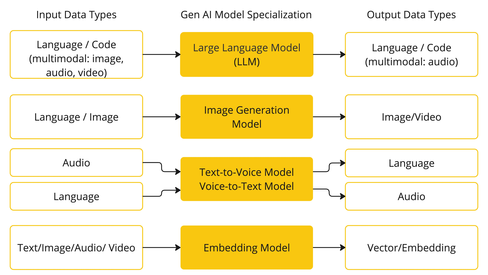
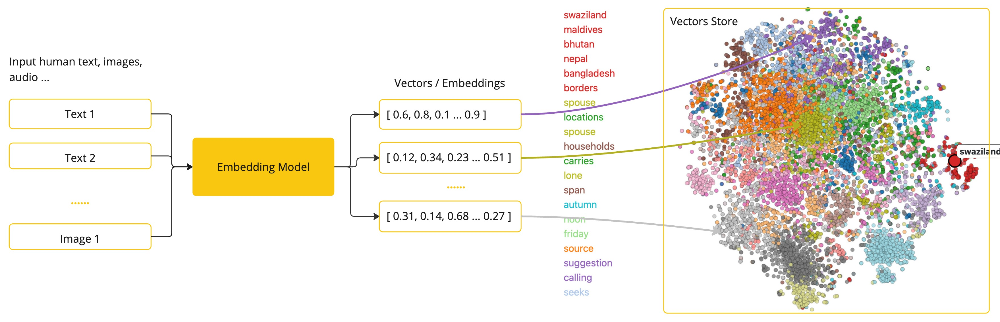
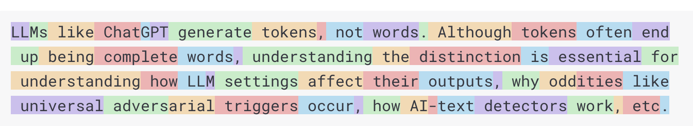
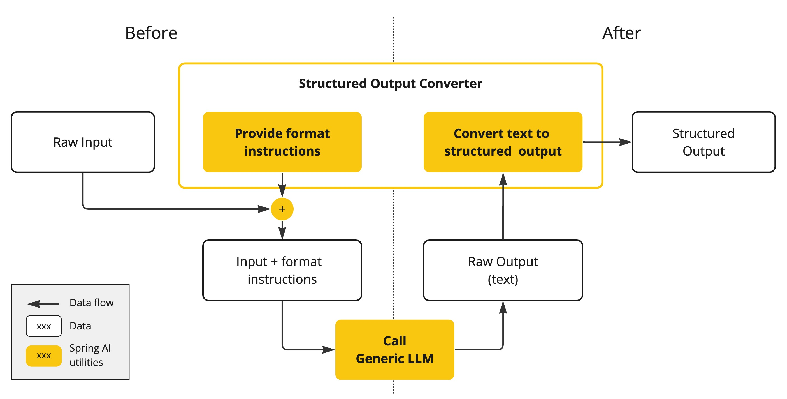
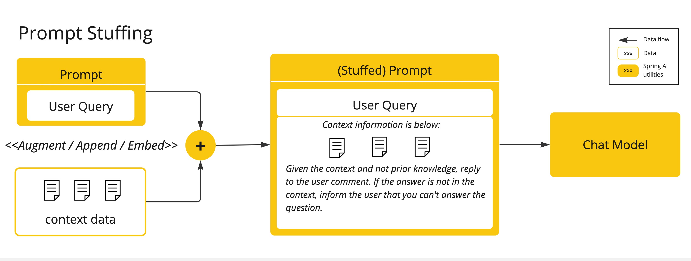
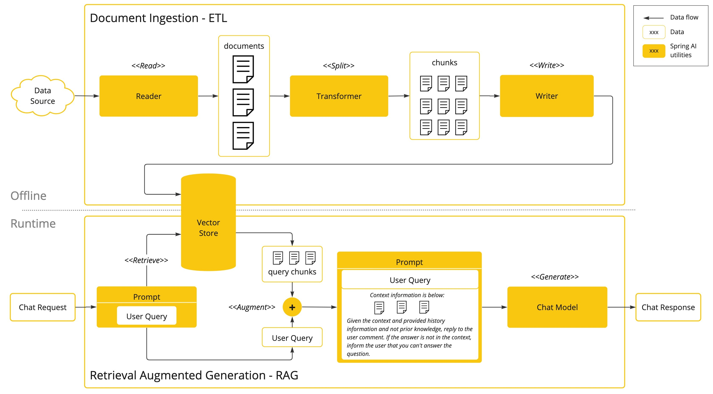
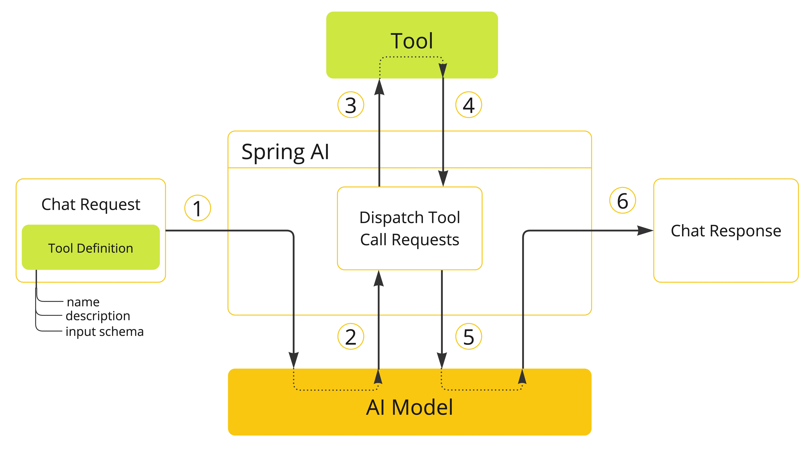

AI Concepts
This section describes core concepts that Spring AI uses. We recommend reading it closely to understand the ideas behind how Spring AI is implemented.
Models
AI models are algorithms designed to process and generate information, often mimicking human cognitive functions. By learning patterns and insights from large datasets, these models can make predictions, text, images, or other outputs, enhancing various applications across industries.
There are many different types of AI models, each suited for a specific use case. While ChatGPT and its generative AI capabilities have captivated users through text input and output, many models and companies offer diverse inputs and outputs. Before ChatGPT, many people were fascinated by text-to-image generation models such as Midjourney and Stable Diffusion.
The following table categorizes several models based on their input and output types:

Spring AI currently supports models that process input and output as language, image, and audio. The last row in the previous table, which accepts text as input and outputs numbers, is more commonly known as embedding text and represents the internal data structures used in an AI model. Spring AI has support for embeddings to enable more advanced use cases.
What sets models like GPT apart is their pre-trained nature, as indicated by the "P" in GPT—Chat Generative Pre-trained Transformer. This pre-training feature transforms AI into a general developer tool that does not require an extensive machine learning or model training background.
Prompts
Prompts serve as the foundation for the language-based inputs that guide an AI model to produce specific outputs. For those familiar with ChatGPT, a prompt might seem like merely the text entered into a dialog box that is sent to the API. However, it encompasses much more than that. In many AI Models, the text for the prompt is not just a simple string.
ChatGPT’s API has multiple text inputs within a prompt, with each text input being assigned a role. For example, there is the system role, which tells the model how to behave and sets the context for the interaction. There is also the user role, which is typically the input from the user.
Crafting effective prompts is both an art and a science. ChatGPT was designed for human conversations. This is quite a departure from using something like SQL to "ask a question". One must communicate with the AI model akin to conversing with another person.
Such is the importance of this interaction style that the term "Prompt Engineering" has emerged as its own discipline. There is a burgeoning collection of techniques that improve the effectiveness of prompts. Investing time in crafting a prompt can drastically improve the resulting output.
Sharing prompts has become a communal practice, and there is active academic research being done on this subject. As an example of how counter-intuitive it can be to create an effective prompt (for example, contrasting with SQL), a recent research paper found that one of the most effective prompts you can use starts with the phrase, “Take a deep breath and work on this step by step.” That should give you an indication of why language is so important. We do not yet fully understand how to make the most effective use of previous iterations of this technology, such as ChatGPT 3.5, let alone new versions that are being developed.
Prompt Templates
Creating effective prompts involves establishing the context of the request and substituting parts of the request with values specific to the user’s input.
This process uses traditional text-based template engines for prompt creation and management. Spring AI employs the OSS library StringTemplate for this purpose.
For instance, consider the simple prompt template:
Tell me a {adjective} joke about {content}.In Spring AI, prompt templates can be likened to the "View" in Spring MVC architecture.
A model object, typically a java.util.Map, is provided to populate placeholders within the template.
The "rendered" string becomes the content of the prompt supplied to the AI model.
There is considerable variability in the specific data format of the prompt sent to the model. Initially starting as simple strings, prompts have evolved to include multiple messages, where each string in each message represents a distinct role for the model.
Embeddings
Embeddings are numerical representations of text, images, or videos that capture relationships between inputs.
Embeddings work by converting text, image, and video into arrays of floating point numbers, called vectors. These vectors are designed to capture the meaning of the text, images, and videos. The length of the embedding array is called the vector’s dimensionality.
By calculating the numerical distance between the vector representations of two pieces of text, an application can determine the similarity between the objects used to generate the embedding vectors.

As a Java developer exploring AI, it’s not necessary to comprehend the intricate mathematical theories or the specific implementations behind these vector representations. A basic understanding of their role and function within AI systems suffices, particularly when you’re integrating AI functionalities into your applications.
Embeddings are particularly relevant in practical applications like the Retrieval Augmented Generation (RAG) pattern. They enable the representation of data as points in a semantic space, which is akin to the 2-D space of Euclidean geometry, but in higher dimensions. This means just like how points on a plane in Euclidean geometry can be close or far based on their coordinates, in a semantic space, the proximity of points reflects the similarity in meaning. Sentences about similar topics are positioned closer in this multi-dimensional space, much like points lying close to each other on a graph. This proximity aids in tasks like text classification, semantic search, and even product recommendations, as it allows the AI to discern and group related concepts based on their "location" in this expanded semantic landscape.
You can think of this semantic space as a vector.
Tokens
Tokens serve as the building blocks of how an AI model works. On input, models convert words to tokens. On output, they convert tokens back to words.
In English, one token roughly corresponds to 75% of a word. For reference, Shakespeare’s complete works, totaling around 900,000 words, translate to approximately 1.2 million tokens.

Perhaps more important is that Tokens = Money. In the context of hosted AI models, your charges are determined by the number of tokens used. Both input and output contribute to the overall token count.
Also, models are subject to token limits, which restrict the amount of text processed in a single API call. This threshold is often referred to as the "context window". The model does not process any text that exceeds this limit.
For instance, ChatGPT3 has a 4K token limit, while GPT4 offers varying options, such as 8K, 16K, and 32K. Anthropic’s Claude AI model features a 100K token limit, and Meta’s recent research yielded a 1M token limit model.
To summarize the collected works of Shakespeare with GPT4, you need to devise software engineering strategies to chop up the data and present the data within the model’s context window limits. The Spring AI project helps you with this task.
Structured Output
The output of AI models traditionally arrives as a java.lang.String, even if you ask for the reply to be in JSON.
It may be a correct JSON, but it is not a JSON data structure. It is just a string.
Also, asking “for JSON” as part of the prompt is not 100% accurate.
This intricacy has led to the emergence of a specialized field involving the creation of prompts to yield the intended output, followed by converting the resulting simple string into a usable data structure for application integration.

The Structured output conversion employs meticulously crafted prompts, often necessitating multiple interactions with the model to achieve the desired formatting.
Bringing Your Data & APIs to the AI Model
How can you equip the AI model with information on which it has not been trained?
Note that the GPT 3.5/4.0 dataset extends only until September 2021. Consequently, the model says that it does not know the answer to questions that require knowledge beyond that date. An interesting bit of trivia is that this dataset is around 650GB.
Three techniques exist for customizing the AI model to incorporate your data:
-
Fine Tuning: This traditional machine learning technique involves tailoring the model and changing its internal weighting. However, it is a challenging process for machine learning experts and extremely resource-intensive for models like GPT due to their size. Additionally, some models might not offer this option.
-
Prompt Stuffing: A more practical alternative involves embedding your data within the prompt provided to the model. Given a model’s token limits, techniques are required to present relevant data within the model’s context window. This approach is colloquially referred to as “stuffing the prompt.” The Spring AI library helps you implement solutions based on the “stuffing the prompt” technique otherwise known as Retrieval Augmented Generation (RAG).

-
Tool Calling: This technique allows registering tools (user-defined services) that connect the large language models to the APIs of external systems. Spring AI greatly simplifies code you need to write to support tool calling.
Retrieval Augmented Generation
A technique termed Retrieval Augmented Generation (RAG) has emerged to address the challenge of incorporating relevant data into prompts for accurate AI model responses.
The approach involves a batch processing style programming model, where the job reads unstructured data from your documents, transforms it, and then writes it into a vector database. At a high level, this is an ETL (Extract, Transform and Load) pipeline. The vector database is used in the retrieval part of RAG technique.
As part of loading the unstructured data into the vector database, one of the most important transformations is to split the original document into smaller pieces. The procedure of splitting the original document into smaller pieces has two important steps:
-
Split the document into parts while preserving the semantic boundaries of the content. For example, for a document with paragraphs and tables, one should avoid splitting the document in the middle of a paragraph or table. For code, avoid splitting the code in the middle of a method’s implementation.
-
Split the document’s parts further into parts whose size is a small percentage of the AI Model’s token limit.
The next phase in RAG is processing user input. When a user’s question is to be answered by an AI model, the question and all the “similar” document pieces are placed into the prompt that is sent to the AI model. This is the reason to use a vector database. It is very good at finding similar content.

-
The ETL Pipeline provides further information about orchestrating the flow of extracting data from data sources and storing it in a structured vector store, ensuring data is in the optimal format for retrieval when passing it to the AI model.
-
The ChatClient - RAG explains how to use the
QuestionAnswerAdvisorto enable the RAG capability in your application.
Tool Calling
Large Language Models (LLMs) are frozen after training, leading to stale knowledge, and they are unable to access or modify external data.
The Tool Calling mechanism addresses these shortcomings. It allows you to register your own services as tools to connect the large language models to the APIs of external systems. These systems can provide LLMs with real-time data and perform data processing actions on their behalf.
Spring AI greatly simplifies code you need to write to support tool invocation.
It handles the tool invocation conversation for you.
You can provide your tool as a @Tool-annotated method and provide it in your prompt options to make it available to the model.
Additionally, you can define and reference multiple tools in a single prompt.

-
When we want to make a tool available to the model, we include its definition in the chat request. Each tool definition comprises of a name, a description, and the schema of the input parameters.
-
When the model decides to call a tool, it sends a response with the tool name and the input parameters modeled after the defined schema.
-
The application is responsible for using the tool name to identify and execute the tool with the provided input parameters.
-
The result of the tool call is processed by the application.
-
The application sends the tool call result back to the model.
-
The model generates the final response using the tool call result as additional context.
Follow the Tool Calling documentation for further information on how to use this feature with different AI models.
Evaluating AI responses
Effectively evaluating the output of an AI system in response to user requests is very important to ensuring the accuracy and usefulness of the final application. Several emerging techniques enable the use of the pre-trained model itself for this purpose.
This evaluation process involves analyzing whether the generated response aligns with the user’s intent and the context of the query. Metrics such as relevance, coherence, and factual correctness are used to gauge the quality of the AI-generated response.
One approach involves presenting both the user’s request and the AI model’s response to the model, querying whether the response aligns with the provided data.
Furthermore, leveraging the information stored in the vector database as supplementary data can enhance the evaluation process, aiding in the determination of response relevance.
The Spring AI project provides an Evaluator API which currently gives access to basic strategies to evaluate model responses.
Follow the Evaluation Testing documentation for further information.